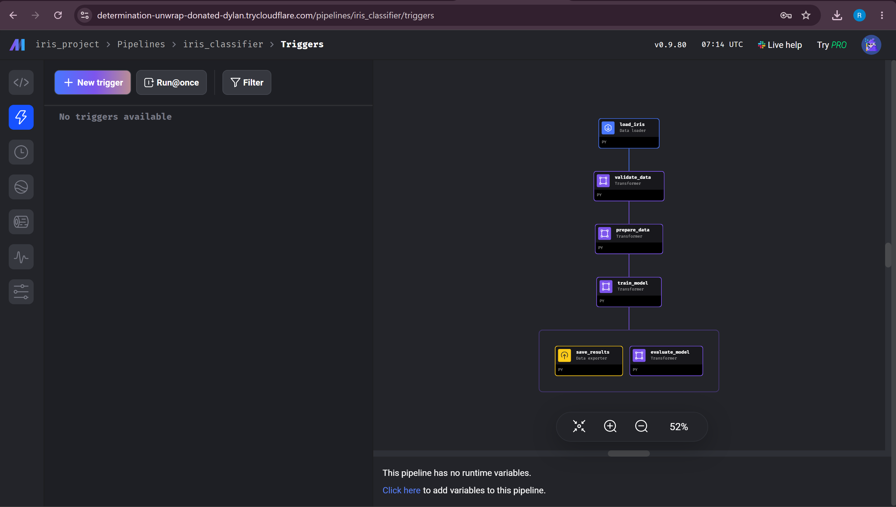

Name: {{NAME}} | Roll no: {{ROLL}} | B.Tech, Computer Science and Engineering | Course: Data Engineering Repository: https://github.com/Ravikumar-2016/freshcart-pipelines (public repository)
Environment: Windows, VS Code, Python 3.12.6, Snowflake, GitHub Actions, Mage AI 0.9.80, CloudAMQP (RabbitMQ). Evidence files are in report/screenshots/; screenshots are in the appendix. The project was built with the help of Claude Code (an AI coding assistant).
Integration diagram
Code lives in Git; CI tests the Mage prepare_data block on every push. The ELT pipeline produces the gold table. The Mage pipeline trains on the Iris dataset from scikit-learn (it does not read the gold table). The stream delivers requests to drivers (Part D); the bonus consumer feeds order events from the same broker into bronze and so into gold.
Part A: Git and CI/CD
A1 Repository and commit history
The repository has the required structure: README.md, .gitignore (ignores .env, *.pkl, *.csv, mage.log, __pycache__/ and .venv/), requirements.txt, elt/, iris_project/, stream/, tests/test_prepare_data.py, .github/workflows/ci.yml. Output of git log --oneline:
{{GITLOG}}
A2 Where does each command act?
Command
Where the change happens
What exactly happens?
git init
working folder / local repository
Makes the current folder a Git repository by creating a hidden .git folder; the repository is still empty.
git add train.py
working folder -> staging area
Copies the current version of train.py into the staging area, the list of changes that will go into the next commit.
git commit -m "msg"
staging area -> local repository
Saves everything in the staging area as one commit with the message "msg", in the repository on this computer.
git remote add origin URL
local repository (settings only)
Gives the GitHub address the short name origin; it only stores the name and sends nothing.
git push -u origin main
local repository -> remote (GitHub)
Sends the commits of the local main branch to GitHub and remembers origin/main, so a plain git push works afterwards.
git pull origin main
remote -> local repository and working folder
Gets new commits from origin/main on GitHub and merges them into the local branch and the files.
After git commit, can a teammate see the code on GitHub? No.git commit only saves the snapshot in the local repository (box 2 of the four-box flow). GitHub is the remote repository (box 3) and receives commits only after git push. In this project the first commit existed locally while GitHub was still empty, until the first push.
A3 CI workflow
tests/test_prepare_data.py checks that prepare_data.transform gives 120 train and 30 test rows (train_test_split(test_size=0.2, random_state=42)). .github/workflows/ci.yml runs on every push: check out the code, set up Python 3.12, pip install -r requirements.txt, python -m pytest. Observed runs: CI #1 green (6d86300); CI #2 red after test_size was set to 0.3 (b038cf1; locally the test failed with 105 == 120); the fix 0c83c3e gave CI #3 green. Screenshots are in the appendix. The workflow run for the later commit a1af458 (CI #6) was also green; this was checked in the GitHub Actions tab and no screenshot of that run is included.
Part B: FreshCart ELT on Snowflake
Notebook elt/freshcart_elt.ipynb; SQL in elt/sql/; code in elt/freshcart.py; sample data in elt/mock_data.py (the course sample data; there are no real APIs). The step-by-step work (B1 to B5) was done in database FRESHCART_DB; the final notebook was then executed once, top to bottom, in a fresh database FRESHCART_FINAL so that the B1 numbers are exact.
B1 Baseline (one run on an empty database)
Check
Expected
Observed
Raw order rows in bronze
8 (6 web + 2 mobile)
8
Rows passing cleaning
6
6
Quarantine
2 (ORD-1004, ORD-1006)
2 (same orders)
After deduplication
4
4
Gold line
4 orders, 7,785.00, 126 points
4 orders, 7785.00, 126 points
Rows rejected
25%
25%
B2 Trace of ORD-1003 and ORD-1005
ORD-1003, step 1: the raw records.bronze.orders_raw holds two rows for this order. The web row (ingest_seq 2) is flat JSON: order_id, cust_email, amount: null, order_date "2026-09-02", updated_at "2026-09-02 09:10:00". The mobile row (ingest_seq 8) is nested JSON with camelCase names: orderId, customer.email, total.value "2,100.00", orderDate "02/09/2026", updatedAt "2026-09-02T18:40:00". The names differ because the two rows come from two different systems (the website export and the mobile API). Bronze keeps each record exactly as received, so nothing is lost. Step 2: the same columns in silver.orders_checked. In 10_orders_clean.sql the unified CTE reads the web names (raw:order_id, raw:cust_email, raw:amount, raw:updated_at) and the mobile names (raw:orderId, raw:customer.email, raw:total.value, raw:updatedAt) into one set of column names. The typed CTE then cleans them: LOWER(TRIM(email)) turns Meera@Outlook.com into meera@outlook.com; INITCAP fixes the name; COALESCE(TRY_TO_DATE(..'YYYY-MM-DD'), TRY_TO_DATE(..'DD/MM/YYYY'), ...) reads 02/09/2026 as 2 September 2026; TRY_TO_DECIMAL(REGEXP_REPLACE(amount,'[^0-9.-]',''),12,2) removes the comma so "2,100.00" becomes 2100.00 (the web NULL stays NULL); TRY_TO_TIMESTAMP_NTZ reads updated_at. Both copies then have the same email, name, date, currency and pincode and differ only in amount (NULL or 2100.00) and updated_at. Both pass validation, because a missing amount is allowed. Step 3: which copy survives.20_orders_dedup.sql uses QUALIFY ROW_NUMBER() OVER (PARTITION BY order_id ORDER BY updated_at DESC, ingest_seq DESC) = 1. The copies of one order are numbered from newest to oldest and only number 1 is kept. The mobile copy (18:40) is newer than the web copy (09:10), so it gets number 1 and survives with amount 2100.00. (If two copies had the same time, the later arrival, the higher ingest_seq, would win.) Step 4: gold. The INR rate is 1.0, so amount_inr = ROUND(2100.00 x 1.0, 2) = 2100.00. Meera is Platinum, multiplier 3, so loyalty_points = FLOOR(2100.00 / 100) x 3 = 21 x 3 = 63. ORD-1005 and ORD-1001 (Priya). The tier is looked up for the date of the order. The table dim.customers_scd2 has two rows for Priya: Silver from 2023-04-10 to 2026-09-02 and Gold from 2026-09-03. In 40_gold.sql the join is c.email = o.email AND o.order_date BETWEEN c.valid_from AND c.valid_to, followed by ref.tier_multiplier (Silver 1, Gold 2, Platinum 3). ORD-1001 is dated 2026-09-01, which falls in the Silver period: FLOOR(1250/100) x 1 = 12 points. ORD-1005 is dated 2026-09-03, which falls in the Gold period: FLOOR(899/100) x 2 = 8 x 2 = 16 points.
B3 Rule unsupported_currency
One line was added inside ARRAY_CONSTRUCT_COMPACT in 10_orders_clean.sql: IFF(currency IS NULL OR currency NOT IN ('INR','USD'), 'unsupported_currency', NULL). The currency is already upper-cased there, so inr and usd still pass. ORD-1006 has currency EUR. Its reasons before the change were ["bad_email","bad_pincode"]; after the re-run, in silver.orders_checked, they are ["bad_email","bad_pincode","unsupported_currency"]. Does the gold total change? No (4 orders, 7,785.00, 126 points before and after). ORD-1006 was already rejected because of its email and pincode, so it never reached silver.orders_clean or gold; the new rule only adds a third reason to a row that was already out. No INR or USD order lost a place. Does the re-run add a second quarantine row for ORD-1006? No. After the re-run quarantine.orders still has one row for ORD-1006, although bronze and silver.orders_checked now hold two copies of it. The part of the SQL that decides this is the AND NOT EXISTS (...) in the quarantine insert of 10_orders_clean.sql: a rejected row is skipped when quarantine.orders already has the same source, order_id and updated_at. The check does not compare the reasons, so the old quarantine row keeps its old reasons and the new reason is visible only in silver.orders_checked.
B4 CUST-02 becomes Gold on 2026-08-15
The event was added to MOCK_CRM_TIER_EVENTS. Predictions were written down and committed (commit 72e290d) before the pipeline was run. In dim.customers_scd2 every tier change starts a new period that lasts until the day before the next change, so CUST-02 (Silver from 2024-01-15) should get two rows. ORD-1002 is dated 2026-09-01, after 2026-08-15, so it should use Gold (multiplier 2). Its amount is 3536.00, so the points should be FLOOR(3536/100) x 2 = 70 instead of 35, the total should rise by 35 to 161, and only ORD-1002 should change. Observed results after the run:
Quantity
Prediction
Observed
CUST-02 rows in dim.customers_scd2
2
2 (Silver to 2026-08-14, Gold from 2026-08-15)
Tier used for ORD-1002
Gold
Gold
Loyalty points for ORD-1002
70
70
Total points in gold
161
161
Gold rows whose published_at changed
1
1 (ORD-1002 only)
A second run of the transformation changed no published_at and no row_hash. Why gold is safe to re-run: each run rebuilds silver.orders_enriched and MERGEs it into gold.fct_orders by order_id. row_hash is a HASH of all columns except order_id. The MERGE updates a row, and sets a new published_at, only when the hash is different (WHEN MATCHED AND t.row_hash <> s.row_hash), and it inserts only orders that are not in gold yet. So a re-run never creates a second row for an order and never touches a row whose values are the same. Why bronze still grows by 8 rows each run: every run extracts the same 8 raw orders again, writes them to new landing files and COPY INTO adds them. Bronze is an append-only copy of everything that was received and does no deduplication; the duplicates are removed later in silver by the ROW_NUMBER step.
B5 Sixth check and ELT vs ETL
The sixth check in quality_checks() is SELECT COUNT_IF(order_date > CURRENT_DATE()) FROM silver.orders_dedup, printed as "orders dated in the future"; it is 0 on the real data. To make it fail, a mock order TEST-B5-FUTURE-DATE-001 dated 2026-12-31 was loaded. It has no amount, so no other check is triggered (a missing amount is allowed and a future date has no FX rate). The output was orders dated in the future 1 PROBLEM. The cleanup first counted the exact markers and checked them (bronze 1, gold 1, quarantine 0, staged file 1, other rows not matched), then deleted only those rows and the staged file. After the transform was run again the check was back to 0 OK and all tables matched the state before the test (19 of 19 checks). ELT vs ETL. FreshCart's orders come from two systems in different shapes and with errors (flat web JSON, nested mobile JSON, duplicates, bad emails). With ELT the raw rows are first loaded unchanged into bronze and then cleaned with SQL inside Snowflake. This keeps the original data, so a changed rule can be run again without fetching the data again (B3 and B4 did not need new extraction), and rejected rows stay in quarantine with their reasons. ETL would still be better when sensitive data such as card or Aadhaar numbers must be masked or removed before it is stored in the warehouse, because in ELT the raw data lands first (the course notes, "Data transformation and orchestration", 30-09-2026, section "ETL and ELT: where the transformation runs", list strict pre-load compliance, small or costly targets and heavy non-SQL processing as the cases where ETL fits best).
mage run iris_project iris_classifier --test: every block printed 1/1 tests passed (2/2 for validate_data), accuracy 1.0 at the default max_depth 3, iris_predictions.csv was written and the exit code was 0 (report/screenshots/C/C1_mage_run_test.txt and the executed notebook iris_project/iris_classifier_run.ipynb).
C2 Tests as a gate
Each run used --runtime-vars '{"max_depth": N}' after iris_predictions.csv had been deleted. The assignment gives no accuracy threshold; the 0.90 in the train_model test is a choice made for this project, because the reference Mage notebook was not available, so the pass/fail column depends on it.
max_depth
Test accuracy
test_accuracy passed?
CSV created?
1
0.6333
No (exit 1)
No
2
0.9667
Yes
Yes
3
1.0000
Yes
Yes
4
1.0000
Yes
Yes
5
1.0000
Yes
Yes
What the numbers mean. There are 30 test rows. At depth 1 the tree can make only one split, so it cannot separate three classes: 19 of 30 rows were right (0.6333). At depth 2 it got 29 of 30 right (0.9667; the confusion matrix in C3 shows one versicolor predicted as virginica), and from depth 3 on all 30 were right. How a failing @test stops save_results: with --test Mage runs the tests of a block right after the block. At depth 1 the train_model test failed (0.6333 is below 0.90), Mage stopped the run with exit code 1 and the blocks after train_model never started: the log has no "Saved" line and no confusion matrix, and the CSV did not exist. Why this is better than saving first and checking later: a bad result never exists as a file that something else could pick up, and the failure shows immediately in the run.
C3 Evaluation branch
train_model has two downstream blocks, save_results and evaluate_model. Relevant part of iris_project/pipelines/iris_classifier/metadata.yaml (other keys omitted):
At max_depth 2 the confusion matrix (rows actual, columns predicted) is: setosa [10, 0, 0]; versicolor [0, 8, 1]; virginica [0, 0, 11]. Metrics (precision / recall): setosa 1.0 / 1.0; versicolor 1.0 / 0.8889; virginica 0.9167 / 1.0; accuracy 0.9667. UI screenshot through the Cloudflare tunnel. Mage was started locally (mage start iris_project, port 6789) and made reachable with a Cloudflare Quick Tunnel (cloudflared). Figure C3 in the appendix is a browser screenshot with the public address determination-unwrap-donated-dylan.trycloudflare.com/pipelines/iris_classifier/triggers in the address bar. It shows the iris_classifier pipeline graph (the graph is on the right of the pipeline's Triggers page) with all six blocks and the branch from train_model to save_results and evaluate_model. A second screenshot, taken on the local server, is kept as additional local evidence. The first attempts to start the tunnel failed (cloudflared reported "context deadline exceeded", and direct requests to Cloudflare's tunnel API returned HTTP 429 or 500 while ordinary HTTPS to the same host worked), which pointed to a temporary problem on Cloudflare's side; the tunnel worked later the same day (log of the failed attempts: report/screenshots/C/C3_cloudflare_tunnel_probe.txt). No cloudflared process was running when this was checked afterwards.
C4 Own block
validate_data is a transformer between load_iris and prepare_data with two @test functions (no missing values, exactly 3 classes). The full six-block run passed. When its tests were run directly on bad data they failed as intended (one NaN: "Found 1 missing values"; two classes: "Expected exactly 3 classes").
Part D: Food-order stream with RabbitMQ
D1 Routing
Exchange rapido-dispatch is a topic exchange; every driver has its own queue bound with its own pattern. In a pattern * matches exactly one word and # matches zero or more words. Bindings: Ravi bangalore.koramangala.*, Priya bangalore.indiranagar.*, Arjun bangalore.*.ride, Meena bangalore.*.food, Karthik chennai.tnagar.food, Control bangalore.#. Predictions (on paper), with the reason; observed = what stream/verify_routing.py read back from the broker's queues after publishing each key. Note on timing: the expected recipients were worked out from the binding patterns before the broker test, but Git has the predictions and the test logs in the same commit (4d59385), so the commit history alone does not show which came first.
#
Routing key
Predicted queues and why
Observed
1
bangalore.koramangala.food
Ravi (* = food), Meena (* = koramangala), Control (# = koramangala.food)
Ravi, Meena, Control
2
bangalore.indiranagar.ride
Priya, Arjun (* = indiranagar), Control
Priya, Arjun, Control
3
bangalore.whitefield.ride
Arjun (* = whitefield), Control; nobody has a whitefield pattern
Arjun, Control
4
chennai.tnagar.food
Karthik (exact match); the others start with bangalore
Karthik
5
chennai.whitefield.ride
dropped: the only chennai binding is chennai.tnagar.food
dropped (the broker reported it as unroutable)
6
bangalore.koramangala
Control only (see below)
Control
Question 6, the two-word key.bangalore.koramangala has only two words. The patterns of Ravi, Priya, Arjun and Meena each have three words, and each contains a * that must match exactly one word; the key has no third word, so they cannot match. Karthik's pattern is a three-word literal, so it cannot match either. Only bangalore.# can match, because # may match zero or more words: bangalore matches the first word and # matches the remaining word koramangala (it would match even if there were no remaining word). So only Control gets the message. All six observed results were equal to the predictions.
D2 Dispatcher and drivers
stream/dispatcher.py sends a request every 2 seconds: it picks a city (bangalore or chennai), a zone and a type (ride or food), builds the key city.zone.type and publishes the JSON {id, city, zone, type, ts} as a persistent message to rapido-dispatch. stream/driver.py NAME PATTERN creates its own private queue, binds it with PATTERN, prints each request it gets (name, key, payload) and sends basic_ack after processing it. Six drivers and the dispatcher ran as separate processes; the dispatcher published from 05:23:59 to 05:26:00 UTC (about 2 minutes), 59 messages. A script compared the logs with the routing rules for every message: each message reached exactly the drivers that the rules predict and no other driver. Counts: Ravi 13, Priya 7, Arjun 17, Meena 15, Karthik 2, Control 32, all acknowledged; 25 messages matched no pattern and were dropped by the exchange. Evidence: report/screenshots/D/D2_* (log files). Example, message #2 (bangalore.koramangala.ride matches Ravi, Arjun and Control only):
SENT #002 id=req-0002-242d4e key=bangalore.koramangala.ride
[Control] RECEIVED key=bangalore.koramangala.ride id=req-0002-242d4e payload={"id":"req-0002-242d4e","city":"bangalore","zone":"koramangala","type":"ride","ts":"2026-11-12T05:24:01+00:00"} -> ACK
[Arjun] RECEIVED ... id=req-0002-242d4e ... -> ACK [Ravi] RECEIVED ... id=req-0002-242d4e ... -> ACK (Priya, Meena, Karthik: nothing)
D3 ACK and NACK
In driver.py a message without zone gets basic_nack(requeue=False); every other message gets basic_ack. In dispatcher.py every 10th message is sent without the zone field. In a live run of 35 messages, messages #10, #20 and #30 were malformed. #10 and #20 matched drivers: Arjun and Control printed REJECTED ... missing field 'zone' -> NACK (requeue=False, discarded) for both, and every valid message was processed and ACKed; #30 matched no queue. A separate script (stream/d3_demo.py) read the queue depth from the broker: a valid message was ACKed and the depth went from 1 to 0; a malformed one was NACKed with requeue=False and the depth went from 1 to 0 (the message is gone). No dead-letter exchange was configured, so a rejected message is simply deleted. What happens if the driver crashes before sending the ACK? With manual acknowledgements RabbitMQ keeps a delivered message as "unacknowledged" until the ACK arrives. If the connection closes first, the broker puts the message back in the queue and delivers it again, marked redelivered=True. The demo showed it: after a consumer closed its channel without ACK the queue depth was 1 again and the next delivery had redelivered=True. So no message is lost, but it can be processed twice. What would requeue=True do for a message that is always bad? It goes back to the queue, is delivered again, fails again, and this repeats without end (a poison message). In the demo the bad message came back on 4 of 4 attempts with redelivered=True and the depth stayed at 1; in a real system it wastes CPU and blocks the messages behind it. With requeue=False it is removed after the first failure.
Bonus: stream into the lakehouse
Flow.stream/order_consumer.py listens on a durable queue bound to the same exchange with the key freshcart.order.web (no D1 driver pattern matches it). It collects order messages in the web format for 60 seconds. A message that is not valid JSON or lacks order_id, cust_email or order_date is NACKed with requeue=False. The collected messages are written to a raw file by the existing write_landing(), loaded into bronze by the existing load_file() (PUT and COPY INTO), and the existing transform SQL builds silver and gold, ending in gold.fct_orders, followed by quality_checks(). The messages are acknowledged only after the file is loaded into bronze; if writing or loading fails they are requeued, so nothing is lost. Test run: three marked orders BONUS-TEST-001..003, a repeat of 001 and one malformed message were sent in each of two runs:
Baseline
After run 1
After run 2
Messages collected / rejected
4 / 1
4 / 1
Gold orders
4
7
7
Gold revenue (INR)
7,785.00
9,535.00
9,535.00
Gold points
161
205
205
bronze order rows
24
28
32
Result. Run 1 added the three orders (+1,750.00 and +44 points, as expected from the tiers). Run 2 sent the same orders again: bronze grew by 4 rows, but gold stayed at 7 orders, 9,535.00 and 205 points and every published_at was unchanged. The reason is the same as in B4: silver keeps one row per order (QUALIFY ROW_NUMBER) and the gold MERGE changes a row only when its row_hash changes. Afterwards the test data was removed (exact marker counts were checked first) and the final state equalled the baseline (report/screenshots/Bonus/).
Reflection
One thing that broke: in the B4 part of the notebook, the analysis cell stopped with KeyError: 'order_id', after the pipeline cell above it had already run once with the new CRM event. The traceback pointed at a merge of two data frames, and the cause was that Snowflake returns column names in upper case (ORDER_ID) while the cell used lower case. Running the pipeline again would have added another 8 rows to bronze and spoiled the "before" comparison, so it was not run again. Instead the "before" state was read with Snowflake Time Travel (the tables as they were just before the run), after checking that it matched the "before" snapshot saved earlier, and the column names were corrected. This was found and fixed with the help of Claude Code, the AI assistant used for the project. Later, while preparing the final run, it turned out that the notebook still depended on that one-off history (a fixed Time Travel time, and the B4 event already inside the sample data), so a clean top-to-bottom run would not have reproduced the B1 numbers. This was fixed by keeping the event separate until section B4, removing the fixed time, and executing the whole notebook once in a fresh database (FRESHCART_FINAL). The lesson: save a "before" snapshot first, and make a notebook re-runnable from the start.
Appendix: screenshots and evidence
A3: CI runs (green, red, green again)
B1: baseline run (rendered notebook outputs)
B3: before / after the currency rule
B4: five outcomes, idempotence, bronze growth
B5: PROBLEM output, cleanup and recovery
Figure C3: Mage AI Iris classification pipeline accessed through a Cloudflare Quick Tunnel, showing the pipeline graph and train_model branch.

Additional local evidence: the same pipeline in the Mage editor on the local server (http://localhost:6789); this capture has no address bar
Text evidence (not reproduced here): report/screenshots/C/ (Mage runs and the log of the first failed Cloudflare attempts), D/ (routing, driver and dispatcher logs, ACK/NACK), Bonus/, Final/ (final notebook run, FINAL_notebook.html).